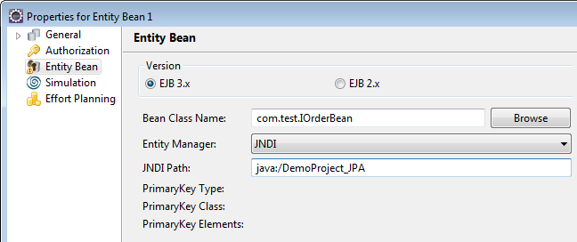
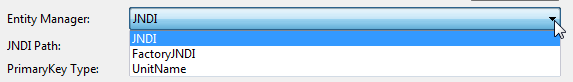
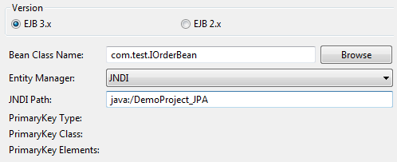
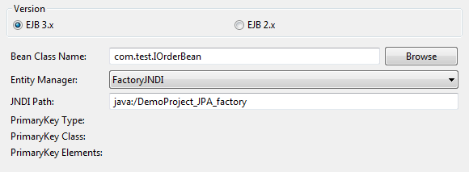
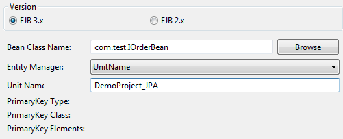
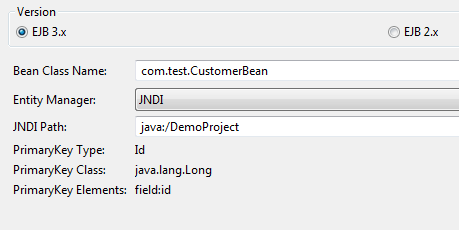
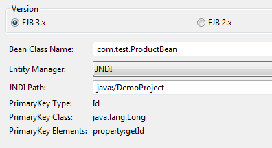
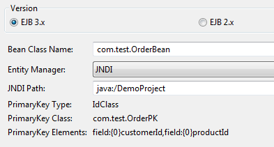
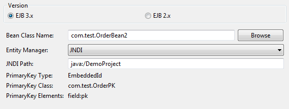
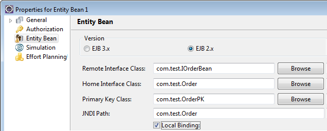

While using a separate data store for the actual data, Entity Beans have to use the audit trail to store their primary key value in the data_value table for later dereferentiation of the Entity Bean.
To specify an Entity Bean data:
The EJB 3.0 mode allows to select a bean class from the Eclipse class browser, satisfying the requirements for an JPA entity bean class.
Access points of the data type are derived from the union of all methods of the business interfaces of this bean class.

Figure: Data Properties Dialog for Entity Bean Data EJB 3.x
The following fields are filled if you select an JPA class with information from the annotations:
These fields are read only. Please refer to the section Primary Key Examples for detailed examples about the information provided in these fields.
For a demonstration on how to use this data type, refer to chapter How to use the EJB3 Entity Data Type.
Enter the bean class with the Eclipse class browser entry. Arbitrary classes can selected.
Note that if the selected class does not satisfy the JPA entity requirements an error status is displayed.
The following compliance rules for JPA classes are applied to the validation:
The Entity Manager is the main runtime class of the JPA runtime API. The following options are provided to create the Entity Manager:

Figure: Entity Manager Field
Per default the JNDI lookup is used.
Note that currently only JNDI is supported to look up the entity manager.
Momentarily the usage of JPA is supported only on JBoss, as for other application servers, e.g. WebLogic, the EntityManagers and EntityManagerFactories cannot be bound in the global JNDI.
In JBoss, the EntityManager and EntityManagerFactories can be bound in the global JNDI by setting appropriate properties in the persistence.xml file, as described in the section Factory JNDI.
If you choose JNDI, the Entity Manager is looked up in the JNDI path.
Use the JNDI name specified in the persistence-unit part in the
persistence.xml file, residing in the
<persistence-unit name="DemoProject">
...
<properties>
<property name="jboss.entity.manager.jndi.name" value="java:/DemoProject_JPA" />
...
</properties>
</persistence-unit>

Figure: Setting JNDI Properties
In case you choose FactoryJNDI, the Entity Manager is accessed from an Entity Manager factory. The name of the factory is specified in the persistence.xml file, e.g.:
<persistence-unit name="DemoProject_JPA">
...
<properties>
<property name="jboss.entity.manager.jndi.name" value="java:/DemoProject_JPA" />
<property name="jboss.entity.manager.factory.jndi.name" value="java:/DemoProject_JPA_factory" />
...
</properties>
</persistence-unit>

Figure: Setting FactoryJNDI Properties
If you choose UnitName, the Entity Manager will be created
from the unit name specified in the persistence.xml file, residing in
the
<persistence-unit name="DemoProject_JPA">
...
</persistence-unit>

Figure: Setting Unit Name Properties
This example uses a bean CustomerBean to demonstrate the simple Id annotation on a field:
@Entity
public class CustomerBean
{
@Id
private Long id;
private String name;
public Long getId()
{
return id;
}
public void setId(Long id)
{
this.id = id;
}
...
}
The fields are filled with the following information:

Figure: Simple Id Annotation on a Field
This example uses a bean ProductBean to demonstrate the simple Id annotation on a property:
@Entity
public class ProductBean
{
private Long id;
private String name;
private Double price;
@Id
public Long getId()
{
return id;
}
public void setId(Long id)
{
this.id = id;
}
...
}
The fields are filled with the following information:

Figure: Simple Id Annotation on a Property
This example uses a bean OrderBean to demonstrate the composite primary key on multiple fields (IdClass):
@IdClass(OrderPK.class)
@Entity
public class OrderBean
{
@Id
private Long customerId;
@Id
private Long productId;
private Long amount;
public Long getCustomerId()
{
return customerId;
}
public void setCustomerId(Long customerId)
{
this.customerId = customerId;
}
...
}
The fields are filled with the following information:

Figure: Composite Primary Key on Multiple Fields
This example uses a bean OrderBean2 to demonstrate the composite primary key on multiple fields (IdClass):
@Entity
public class OrderBean2
{
@EmbeddedId
private OrderPK pk;
private Long amount;
public OrderPK getPk()
{
return pk;
}
public void setPk(OrderPK pk)
{
this.pk = pk;
}
...
}
The fields are filled with the following information:

Figure: Composite Primary Key on a Single Field
Set the following properties:

Figure: Data Properties Dialog for Entity Bean Data
To test a local class as a mock Entity Bean, check the Local binding check box. The implementation has to implement a dummy home class implementation with a create() and a findByPrimaryKey()implementation.
Stardust supports instantiation of the entity bean via a bean method creation defined in a session bean application before it can be used as the data type in the process. In the following example, the complete method of the session bean is set to createBmpEntity and then the return value; the created entity bean is set via out data mapping to the entity bean data defined in the model.
public BmpEntity createBmpEntity(String aString) throws RemoteException
{
InitialContext ic = null;
Object obj = null;
BmpEntity bmpEntity = null;
try
{
ic = new InitialContext();
obj = ic.lookup("com.example.hydra.entitybean.bmp.BmpEntity");
BmpEntityHome home = (BmpEntityHome) PortableRemoteObject.narrow(obj,
BmpEntityHome.class);
bmpEntity = home.create(aString);
}
catch (Exception ex)
{
System.out.println(ex.getMessage());
}
return bmpEntity;
}